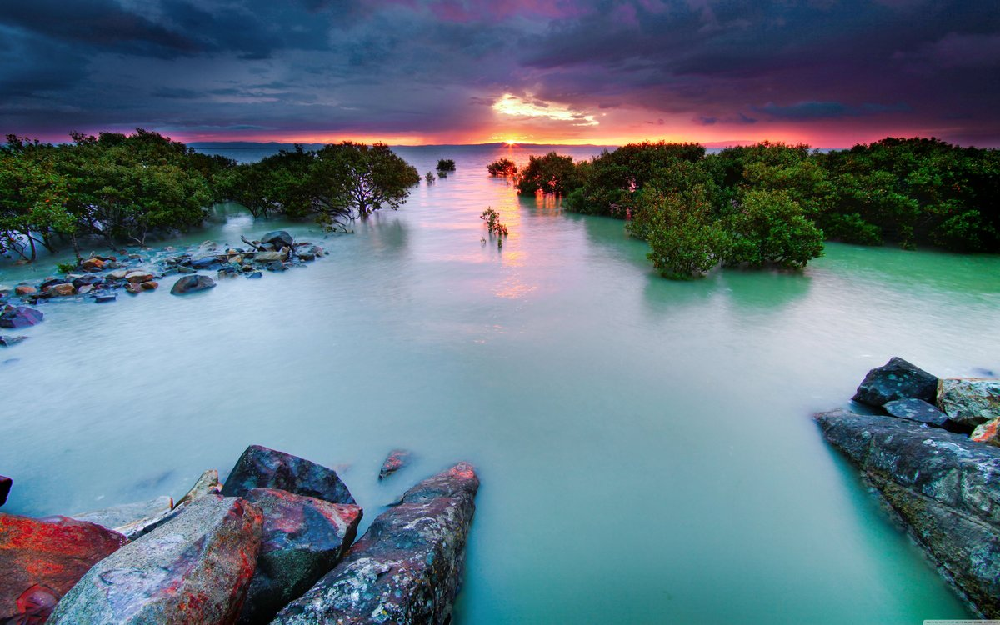

Амурский тигр довольно крупный,
считается крупнейшим среди представителей
семейства кошачьи,
с
более густой и светлой шерстью по сравнению с его южными сородичами.
Ученые установили, что шум водопада благопроиятно
влияет на психику челвека,
успокаивая его и
помогая справиться со стрессом.

Небольшие озёра не живут вечно — в среднем на озёрном
дне за тысячу лет
накапливается около метра
осадков, что рано или поздно приводит к тому,
что озеро высыхает или превращается в болото.